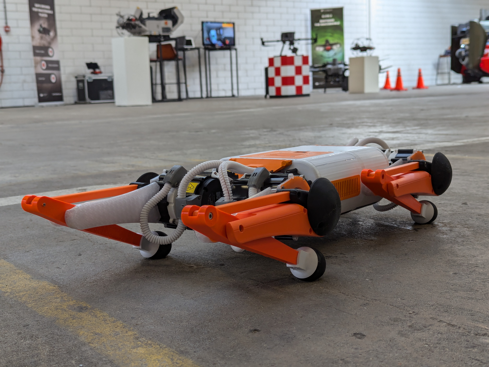

MSc Thesis: Co-design of Quadruped Using Reinforcement Learning

- Developed a complete quadruped hardware platform from scratch, covering:
- Mechanical design and structural development.
- Electronic setup and component selection for optimal performance.
- Low-level software to enable motor communication with NVIDIA Jetson via CAN bus.
- Linux service scripts to initialize and manage low-level software processes.
- Applied Reinforcement Learning to train locomotion policies:
- Utilized MJX and PPO for various locomotion policy training.
- Created a robust training infrastructure for streamlined policy testing and verification.
- Developed scripts to convert and deploy policies on the physical robot.
- Successfully implemented and demonstrated trained policies on a real-world quadruped robot:
- The robot consistently performed well at various events, operating continuously without failure or falls.